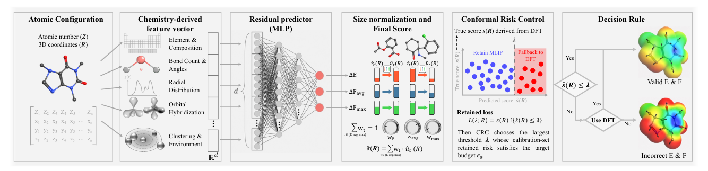
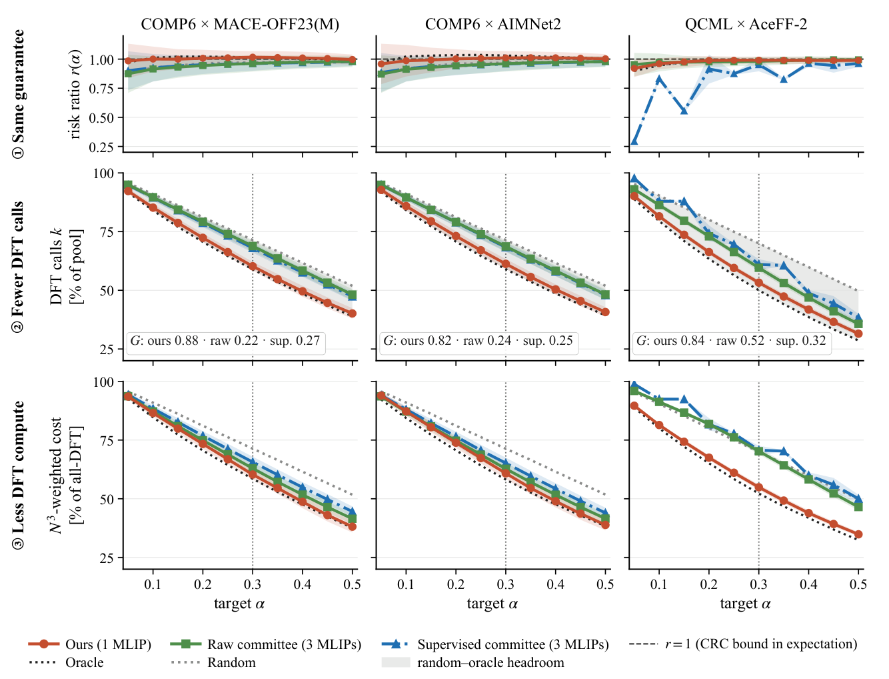
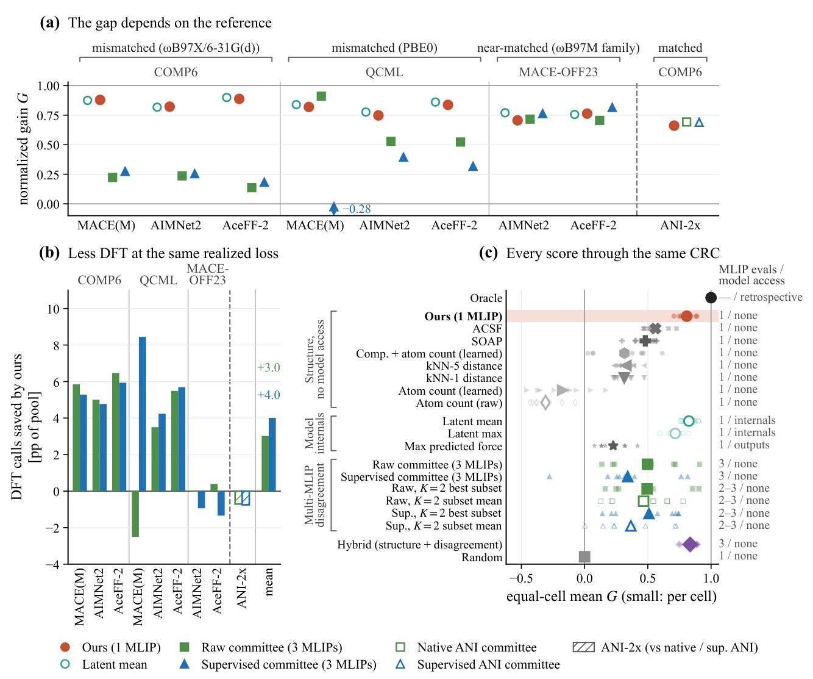

风险控制的DFT调用：先预测机器学习势在哪里容易错，再校准计算阈值
论文原文 ↗原文：Kun Ryu、Yeo Jin Jung、Shyue Ping Ong、Claire Donnat、Ying Shirley Meng，Risk-Controlled DFT Selection for Machine-Learned Interatomic Potentials，arXiv:2610.19630，2026。〔官方页面｜〕
假设研究者已经有一个训练好的机器学习原子间势，要为一大批分子构型提供能量与力。全部用 DFT 很慢，全部采用机器学习势又会遇到误差特别大的构型。实际需要的是：把值得计算的构型送去 DFT，其余继续使用便宜的模型结果。
常见办法是让多个势同时预测，根据它们彼此分歧的大小决定是否调用 DFT。但多个模型可能共享偏差，例如它们训练所用的泛函或基组与当前要采用的 DFT 参考不同。这时模型彼此接近，仍可能一起偏离目标参考。此外，即使某个分数能把错误排出顺序，研究者还需要决定：阈值放在哪里，才能以可接受的剩余误差换取更少的 DFT 调用？
作者将这两步分开：先用结构信息学习误差排序，再用保形风险控制（conformal risk control，CRC）校准阈值。CRC 在这里是一种利用独立带标签样本选择阈值的统计方法，把“允许剩下多少误差”转换成“哪些构型送去 DFT”。

图1｜结构描述符进入轻量预测器，得到误差分数；校准阶段选择阈值，随后按分数决定保留机器学习势结果或调用 DFT。
一、方法怎样从一个构型走到调用决定
先准备带标签的参考数据，分别用于拟合和校准
目标机器学习势保持冻结。作者先取得一批有 DFT 标签的分子，把同一分子的所有构型放在同一组，再按分子身份划分拟合集、校准集和测试集。主实验比例为40%、20%、40%。拟合集用来训练误差预测器；独立校准集用来定阈值；随后将固定规则应用到测试构型。
例如输入一个咖啡因构型，程序先接收其原子序数和三维坐标，生成固定长度的350维结构向量。它汇总元素组成、元素分辨的配位数、接触距离相对共价半径的压缩或拉长、局部拥挤、角度畸变、径向分布及邻居元素信息。不同大小的分子经这些计数和统计汇总，都变成相同长度的输入。
这些描述符由几何和元素计算得到。真正的监督信号则来自拟合集：把同一构型的机器学习势与目标 DFT 结果相减，观察它哪里预测不准。
用三个误差通道，把总能量和原子受力一起考虑
作者预测三类量：总能量误差、所有原子的平均力误差、单个原子的最大力误差。前者反映构型能量的偏差，后两者分别抓住普遍的受力偏差和局部特别严重的错误。
由于不同模型的原子能量零点约定可能不同，作者先在拟合集上拟合元素组成对应的能量常数，使总能量落在共同基准上。再估计三个误差通道随原子数变化的尺度，将它们归一化，避免大分子仅因原子多就在排序中占据高位。主实验对三个通道等权相加。
结构向量进入小型多层感知机，输出这三个归一化误差的预测，再组合为一个分数。使用时需要的是：哪些构型排在误差较大的一侧。目标势仍按原来方式给出能量和力，另加的预测器负责判断何处应交给 DFT。
校准阈值时，直接约束留给机器学习势的误差
对一个候选阈值 λ，高于它的构型送去 DFT，低于或等于它的构型保留机器学习势结果。阈值越低，DFT 调用越多，剩余误差越少。
作者先把能量、平均力和最大力合成的真实误差分数设定上限，再将同一分子所有保留构型的误差累加，并对分子总损失设置上限。这样得到一个有界、随阈值增加而增大的“分子身份级损失”。它是统计校准实际控制的量。
用户选择 α，表示允许的期望剩余损失占拟合集平均分子损失的比例。以 α=0.30 为例，目标就是把这项损失的期望控制在拟合集均值的30%。校准程序逐个考察分数阈值，根据校准样本的真实损失，加上有限样本修正，取仍满足预算的最大阈值，从而尽量减少 DFT 调用。
论文在校准分子与后续测试分子可交换的条件下，给出这一期望损失控制。可交换在这里指这些分子组来自可以互换对待的同一统计总体。误差预测器决定排序好不好、要付出多少 DFT；独立校准决定满足预算的阈值。 因而，作者能把多个排序方法放进同一校准规则，比较它们为达到相同目标各自要算多少次 DFT。
二、主要结果：相同风险控制下，结构排序减少了多少计算
1. 八组数据—势组合中，结构预测器平均降低DFT调用
实验包含 COMP6、MACE-OFF23 与 QCML 三个分子数据集，以及 MACE-OFF23(M)、AIMNet2、AceFF-2 三种势；去掉目标势与其自身训练数据来源重合的一组后，共八个组合。
比较对象包括随机排序、三模型原始分歧、用标签学习如何组合三模型分歧的监督委员会，以及事后使用真实误差排序的参考。所有排序都通过同一个 CRC 程序。

图2｜上排是风险比，中排是送去 DFT 的构型比例，下排按原子数立方估计 DFT 成本；橙色为结构预测器。
在 α=0.30 时，八组等权平均结果为：
| 排序方法 | 送去DFT的构型比例 |
|---|---|
| 结构误差预测器 | 57.8% |
| 三模型原始分歧 | 61.9% |
| 监督委员会 | 67.5% |
| 随机排序 | 71.6% |
| 真实误差排序参考 | 54.4% |
因此，相对原始分歧与监督委员会，结构方案分别少调用约 7%和14%的 DFT；对应的是整个候选池约4.1和9.7个百分点。作者也把比较改成相同的实际保留损失，在各方法共同达到的损失区间上平均，结构方案分别节省约3.0和4.0个百分点的 DFT 调用。
此外，结构方案每个构型只需要运行一个目标势，再计算结构描述符；委员会方案需要三个势分别预测。论文用调用次数及原子数立方加权的 DFT 成本衡量这些收益。
2. 多模型共享偏差时，彼此分歧更容易漏掉误差

图3｜a 按目标 DFT 与势训练参考的关系排列测试；b 比较相同实际损失下节省的 DFT；c 比较结构、模型内部表示和委员会等分数。
结构方案的优势在 COMP6 等参考理论差异较大的组合中尤其明显。其原因与开场问题对应：委员会善于发现模型各自不同的错误，结构预测器则可以从目标 DFT 标签中学到多个模型共同具有的偏差。
作者用归一化收益 G 衡量一种排序取得了多少“从随机排序到真实误差排序”的改善空间。八组平均，结构方案为 0.808，原始委员会为0.497，监督委员会为0.341。随着评估参考与训练参考接近，委员会的表现提高；在单独考察的 ANI-2x—COMP6 参考匹配案例中，原生委员会略优于结构方案。这使论文解释了何种参考关系下，结构监督信息更能补充委员会分歧。
3. 不读取目标势内部特征，也能获得接近的误差排序能力
模型的内部表示常用于衡量构型与已学化学环境的关系。作者把目标势每个原子的内部特征平均汇总后，交给同类误差预测器，得到平均 G=0.82，与350维结构方案的0.81接近。使用 SOAP 和 ACSF 两种常见结构表示时，分别为0.48和0.56。
这表明，为该误差排序任务设计的几何与化学描述符，可以在不提取目标势内部特征的情况下提供有用信息。对使用现成势开展计算的研究者，这意味着可以围绕已有模型建立外接的 DFT 调用决策层。
三、贡献：把计算预算与可校准的误差目标接起来
这篇工作将“模型可能不可靠”推进成一个明确决策：先指定保留损失预算，再用校准数据求出 DFT 阈值，并在同一预算下比较排序效率。它将预训练势、结构误差预测器和统计校准组合成一个固定流程，面向同一总体的重复筛选任务；作者把前期拟合与校准标签计入成本后，所测设置在约2—4个可比候选池后摊平投入。
论文还指出，构型总能量中的同向误差可能在能量差里相互抵消；只把其中部分构型换成 DFT，会改变这种抵消。作者因此把相对能量与构象选择另行写成直接校准的目标。其方法价值是让使用者把真正关心的计算结果变成损失函数，再据此分配 DFT，而不只依靠一个经验不确定性阈值。
原始摘要完整中文翻译
自动化材料发现需要评估大量候选构型，而密度泛函理论（DFT）是影响处理通量的主要瓶颈。预训练机器学习原子间势（MLIP）可以低成本近似 DFT，但其误差在不同构型之间可能相差数个数量级，使人难以决定何时应信任 MLIP 预测、何时应退回 DFT。我们将这一决策表述为风险受控的选择问题，并在保形风险控制（CRC）框架下求解。每个构型从原子序数和笛卡尔坐标映射到一个固定几何描述符，轻量预测器据此估计能量、平均力和最大力上的 MLIP—DFT 差异分数。CRC 随后将这个分数校准为 DFT 标注的选择阈值，使未被选择、继续保留 MLIP 标签的构型所承载的 MLIP 误差，保持在用户选定的期望误差比例 α 以下。在八个数据集—MLIP 组合中，在相同保证下，当 α=0.3 时，相比委员会基线，我们的预测器分别少将7%和14%的构型送去 DFT。由于委员会分歧会漏掉 MLIP 共享的误差，当 DFT 标签与 MLIP 训练数据的 DFT 泛函和基组不同时，收益最大；两者一致时，差距缩小。无需访问模型内部，这一仅依赖结构的预测器也能达到与目标 MLIP 潜在表示相当的误差排序能力，并优于平滑原子位置重叠（SOAP）和原子中心对称函数（ACSF）等广泛使用的描述符。